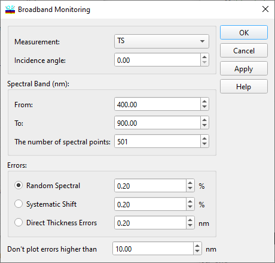
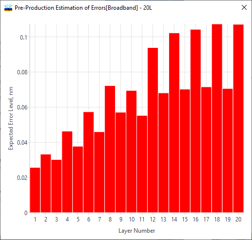

Pre-production Estimation of Errors - Broadband Monitoring
Pre-production Estimation of Errors - Broadband Monitoring
Navigation: OptiLayer Menu Commands > Analysis Menu > Pre-production Estimation of Errors >
Pre-production Estimation of Errors - Broadband Monitoring
` <material_dispersion_evaluation.html>`__ ` <idh_menu_analysis.html>`__ ` <pre_production_monochromatic.html>`__
The main ideas of the option allowing to estimate the effect of error accumulation in the case of broadband monitoring were published in Applied Optics in 2006:
The main settings for pre-production estimation of errors for the broadband monitoring case are entered in the setup dialog.

It is necessary to specify:
Measurement type (usually transmittance)
Angle of incidence (usually normal incidence case)
Spectral band of the broadband monitoring device
The number of spectral points in the broadband data
Additionally, it is necessary to indicate the type of errors that are to be investigated:
Random errors (and their level in %)
Systematic shift (and the corresponding level in %)
Direct Thickness Errors (in nm)
In order to provide a properly scaled bar diagram, it is possible to indicate the truncation level for errors that are too high (“Don’t plot errors higher than”) in the entry field.

As a result, a bar chart will display expected error levels. Using this chart, it is possible to analyze the obtained design with respect to manufacturability with the selected monitoring type and parameters.

Note: Since 2014, multi-chip configurations (deposition strategies with multiple witness chips) are supported. The strategy should be specified in the OptiMonitor window.